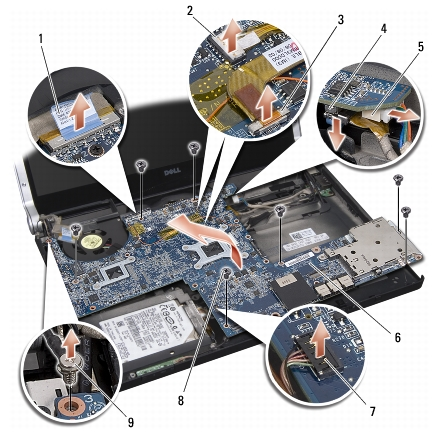

Voltar à página do índice
Placa de sistema
Dell™ Studio XPS™ 1340 Manual de serviço
 Como remover a placa de sistema
Como remover a placa de sistema
Como recolocar a placa de sistema

|
ADVERTÊNCIA: antes de trabalhar na parte interna do computador, siga as
instruções de segurança fornecidas com o computador. Para obter mais
informações sobre as melhores práticas de segurança, consulte a página inicial
sobre conformidade com normalização em
www.dell.com/regulatory_compliance.
|

|
AVISO: para evitar a descarga eletrostática, elimine a eletricidade estática usando
uma pulseira de aterramento ou tocando periodicamente em uma superfície
metálica sem pintura (por exemplo, o painel traseiro) no computador.
|
|
|
AVISO: somente um técnico credenciado deve executar reparos no computador.
Danos decorrentes de mão-de-obra não autorizada pela Dell™ não serão cobertos
pela garantia.
|
O chip do BIOS da placa de sistema contém a etiqueta de serviço, que aparece também em uma etiqueta de código de barras na parte inferior do computador. O kit de reposição da placa de sistema inclui um CD que contém um utilitário para a transferência da etiqueta de serviço para a nova placa de sistema.
|
|
AVISO: segure os componentes e as placas pelas bordas e evite tocar nos pinos e
contatos.
|
Como remover a placa de sistema
- Siga as instruções descritas em Antes de começar.
- Remova a tampa da base (consulte Como remover a tampa da base).
- Remova bateria de célula tipo moeda (consulte Como remover a bateria de
célula tipo moeda).
- Remova o disco rígido (consulte Como remover o disco rígido).
- Remova os módulos de memória (consulte Como remover o(s) módulo(s)
de memória).
- Remova as tampas traseiras (consulte Como remover as tampas traseiras).
- Remova os dissipadores de calor do processador (consulte Como remover o
dissipador de calor do processador central e Como remover o dissipador de
calor do processador gráfico/ventilador térmico).
- Remova as Mini-Cards, se houver (consulte Como remover a Mini-Card).
- Remova o apoio para as mãos (consulte Como remover o apoio para as
mãos).
- Remova a unidade óptica (consulte Como remover a unidade óptica).
- Remova os sete parafusos que prendem a placa de sistema à base do
computador.
- Remova o parafuso de aterramento do cabo da tela que prende o cabo de
aterramento da tela à placa de sistema.

|
1
|
aba de puxar do cabo da tela
|
2
|
conector do cabo da luz de energia
|
|
3
|
conector do cabo da câmera
|
4
|
conector do cabo eSATA
|
|
5
|
conector do cabo do adaptador CA
|
6
|
placa de sistema
|
|
7
|
conector do cabo da luz de status
|
8
|
parafusos (7)
|
|
9
|
parafuso de aterramento do cabo da tela
|
|
|
- Desconecte o cabo da tela, o cabo da luz de energia, o cabo da câmera e o
cabo da placa da luz de status do conector da placa de sistema.
- Levante a placa de sistema em ângulo em direção à lateral do computador
e desconecte o cabo eSATA e o cabo do adaptador CA da placa de sistema.
- Retire a placa de sistema da base do computador.
Como recolocar a placa de sistema
- Coloque a placa de sistema na base do computador fazendo um ângulo.
- Conecte o cabo eSATA e o cabo do adaptador CA à placa de sistema e
coloque-a em posição.
- Recoloque os sete parafusos que prendem a placa de sistema à base do
computador.
- Conecte o cabo da tela, o cabo da luz de energia, o cabo da câmera e o
cabo da placa da luz de status ao conector da placa de sistema.
- Recoloque o parafuso de aterramento do cabo da tela que prende o cabo de
aterramento da tela à placa de sistema.
- Recoloque a unidade óptica (consulte Como recolocar a unidade óptica).
- Recoloque o apoio para as mãos (consulte Como recolocar o apoio para as
mãos).
- Recoloque as Mini-Cards, se houver (consulte Como recolocar a Mini-Card).
- Coloque as novas almofadas de resfriamento térmico nos dissipadores de
calor do processador.

|
NOTA: caso o processador ou a placa de sistema esteja sendo substituída, use a almofada de resfriamento térmico fornecida com o kit no dissipador de calor do processador central e no dissipador de calor do processador gráfico para assegurar a condutividade térmica adequada. |
- Recoloque os dissipadores de calor do processador (consulte Como
recolocar o dissipador de calor do processador central e Como recolocar o
dissipador de calor do processador gráfico/ventilador térmico).
- Recoloque as tampas traseiras (consulte Como recolocar as tampas
traseiras).
- Recoloque o(s) módulo(s) de memória, se houver (consulte Como
recolocar o(s) módulo(s) de memória).
- Recoloque o disco rígido (consulte Como recolocar o disco rígido).
- Recoloque bateria de célula tipo moeda (consulte Como recolocar a
bateria de célula tipo moeda).
- Recoloque a tampa da base (consulte Como recolocar a tampa da base).
|
|
AVISO: antes de ligar o computador, recoloque todos os parafusos e verifique se
nenhum parafuso foi esquecido dentro do computador. A negligência no
cumprimento desta instrução pode resultar em danos ao computador.
|
- Ligue o computador.
|
|
NOTA: após ter recolocado a placa de sistema, digite o número da etiqueta de serviço do computador no BIOS da placa de sistema de reposição. |
- Insira, na unidade adequada, o CD de atualização do BIOS tfornecido
com a placa de sistema de reposição. Siga as instruções exibidas na tela.
Voltar à página do índice